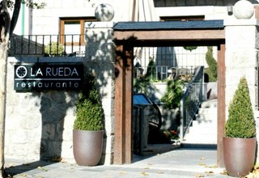
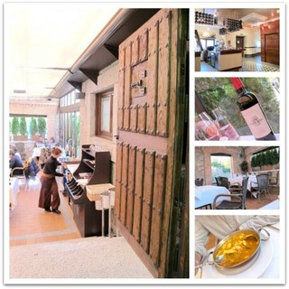
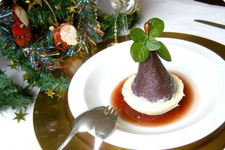
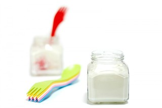

Thu, 15 Nov 2012 23:46:50 +0000
Mermelada de castañas casera
Mermelada de castañas casera
¿A que huelen las hojas? ¿Porqué los perros tienen la necesidad de olfatearlo todo? Que divertido es hacerle fotos a Willy. Una de claves del mundo perruno. ¿Alguien puede explicar por qué olía la hoja de encima de la Mermelada de castañas? Yo creo que este can es el fan más fan de Velocidad Cuchara y [...]
 ¿A que huelen las hojas? ¿Porqué los perros tienen la necesidad de olfatearlo todo?
¿A que huelen las hojas? ¿Porqué los perros tienen la necesidad de olfatearlo todo? Que divertido es hacerle fotos a Willy. Una de claves del mundo perruno. ¿Alguien puede explicar por qué olía la hoja de encima de la
Mermelada de castañas? Yo creo que este
can es el fan más fan de Velocidad Cuchara y su pituitaria traspasa hasta los envases al vacio. Por cierto, no es creáis que es fácil esto de tener perro. Ahora saco la vena reivindicativa. Vivimos en un país en que llevar un animal a cuestas sigue siendo un problema para viajar, comer en cualquier local o alojarse en un hotel. A mi me han echado de muchos espacios públicos: Terrazas, bares y hasta de una iglesia en una ocasión. Desde aquí reivindico que los dejen pasar. Seamos europeos al menos en alguna cosa. Los perros que están acostumbrados a estar en casa y educados no van por ahí dejando regalos en cada esquina, están desparasitados, vacunados y limpios, más que muchos humanos. :DD (Os lo digo yo que soy enfermera y veo de todo).
¿Sabéis cuál es la tienda favorita de Willy? Durante muchos años el Vinçon de la calle Castelló que lamentablemente cerró hace algo más de un año y donde había un cacharro con agua en la puerta para darles la bienvenida. Le asustaban mucho las escaleras mecánicas. Ahora le llevo al Verdecora (tienda de plantas y decoración donde si le dejan pasar) pero por encima de todo le chifla el Aeropuerto de Barajas (en otros muchos no pueden ni pisar el suelo). Creo que lo ve todo tan amplio y con tantos pies andando de un lado para otro, que se vuelve loco. Si por él fuera, se pondría a correr por todos los pasillos para saber si se acaba en algún lugar. ¡Abramos las tiendas a los perros ya!

Y después de reivindicar los derechos de mi can, vamos con la receta. Los botes son de Juvasa.com, tienen de todo, y además ahora tienen los derechos de venta de tarros de Le Parfait en España, y esos me encantan -seguro que os suenan de los patés-. La tela que cubre los botes la he recortado de una vieja servilleta que ya no usaba y para atarla, he reciclado los lazos que vienen ahora en la ropa en la zona de los hombros para colgar en las perchas. Ya veis que aquí no se tira nada. Las hojas son las de se caen de mis plantas en mi pequeña terraza :D
| Mermelada de castañas casera |
|
Tipo de receta: Postres, Mermeladas
Autor: Rosa Ardá
Tiempo prep: 60 mins
Tiempo cocina: 60 mins
Tiempo total: 2 hours
Raciones: 5
- 1 kilo de castañas
- sal
- Litro y medio de agua
- 650 gr de azúcar
- la piel de un limón
- 50 gr de ron
- Pela las castañas, llevan su tiempo. La piel interior si no te sale no te preocupes que se la quitaremos después. Viertelas en el cestillo y lava con agua fresca bajo el grifo.
- Pon en el vaso 1,5 litros de agua, coloca el cestillo dentro del vaso con las castañas peladas y cuece con un poco de sal 40 minutos, 100º, velocidad 1.
- Retira el cestillo y tira el agua del vaso. Quita las pieles que han quedado para que las castañas queden perfectamente limpias. Yo las abro por la mitad y les quito el piquito que tienen arriba en la puntita.
- Pon el vaso en posición de báscula o peso y echa las castañas al vaso -a mi me han quedado en 650 gr- tritura unos segundos a Velocidad 5 y agrega el mismo peso en azúcar. Mezcla unos segundos con el azúcar (15 segundos en velocidad 7). Agrega la cáscara de un limón y cocina 30 minutos, 100º, velocidad 1.
- Retira la cáscara de limón. Agrega los 50 gr de ron y tritura 2 minutos en velocidad progresiva. Pasa a botes, esteriliza y ya tienes mermelada para rato.
Si te queda muy espera puedes añadir o un poco más de ron o un chorrito de agua.
Yo he llenado 5 botes de 212 ml.
Las castañas se pelan mejor en caliente, así que podéis ir sacándolas del cestillo una vez cocidas de una en una para que no se enfríen y la piel se desprenda con más facilidad.
2.2.7
Mon, 12 Nov 2012 23:09:23 +0000
Madrid: Restaurante La Rueda (El Escorial)
Madrid: Restaurante La Rueda (El Escorial)
Hace 9 años que vengo a este restaurante. Lo conozco porque soy una enamorada de la sierra madrileña y porque tengo muchos amigos que viven aquí. Además cuando me entra un ataque de morriña -y me apetece ver piedras en las calles- me escapo hasta El Escorial y me paso a comer o cenar por [...]

Hace 9 años que vengo a este restaurante. Lo conozco porque soy una enamorada de la sierra madrileña y porque tengo muchos amigos que viven aquí. Además cuando me entra un ataque de morriña -y me apetece ver piedras en las calles- me escapo hasta El Escorial y me paso a comer o cenar por “La Rueda“. Soy de las que no repite mucho los sitios, pero hay algunos que merecen la pena, así que esta recomendación me sale del alma.
Hacía meses que no me iba con Javi a tomar una sopa de cocido o de marisco, los Lomos de Merluza con boletus edulis y gambas y mi postre preferido, la Milhoja de nata y crema. Este finde me apetecía. La Rueda fue un mesón durante mucho tiempo pero ahora han reformado la casa de piedra contigua, así que hay dos restaurantes “La Rueda” para elegir. En el antíguo tienes menú diario. En el nuevo se tira de carta, pero a partir de 2013 tendrán también un menú ejecutivo. El nuevo restaurante es maravilloso, la casa de piedra rehabilitada ha quedado increíble y ahí es donde José y su hermano Julio trabajan a destajo.
Lo más importante para mi, es ver las caras conocidas de todos los camareros que te atienden siempre con tanto cariño -ahora van monísimos con un delantal a modo de fajín, están muy guapetones, aunque ellos te digan que están raros- y lo más importante, se come de vicio, la gran calidad del producto es algo que enamora, pero ahora además bajo techo nuevo, y que techoooo! (No os dejo foto del salón de arriba, prefiero que lo veáis vosotros mismos :))

Creo que tenía los ojos como platos la primera vez que entré en el nuevo local. Me estaba gustando lo que veía, la decoración es elegante, ni muy moderno, ni muy clásico, simplemente acogedor. Cómo véis en las fotos no falta detalle. La terraza la tienen cubierta, por lo tanto ahora que llega el frio se tapa. A la entrada tienes una barra para tomar un copa mientras esperas mesa, al lado está el primer salón con una capacidad para 25 personas y bajando las escaleras los aseos que son blancos y muy amplios. En la planta primera un salón mucho más espectacular con el techo de madera y con una capacidad para 60 personas. Todas las obras de arte son de Roberto Valentín Carrera.
¡¡¡Ya sé que los interesa es la comida!! Es de los mejores sitios que conozco,no tienen nada que envidiar a locales donde pagas 100 euros por persona pero aquí saldrás mucho mejor de precio y la comida es muy suculenta. Ya no tenéis que escáparos a Segovia para tomar un buen cochinillo y tienen además buenas carnes de la sierra, pero además tienen también unos pescados delicadamente preparados. No defrauda. Si escogéis el fin de semana para comer o cenar, reservad antes, es mejor porque como os podeis imaginar suele tener mucha gente.
Que lo disfrutéis tanto como yo. Nos vemos por “La Rueda”.
Restaurante La Rueda: Cocina madrileña y tradicional
Web: en construcción laruedarestaurante.com
Dirección: Avenida Constitución, 41. El Escorial, Madrid 28280
Teléfono: 918 903 832 / 918 903 477
Recomendamos: ensalada del chef, pulpo en cama de patatas, lomos de merluza con boletus y gambas, sopas caseras, arroz con carabineros, huevos rotos de corral con patatas panadera, croquetas de Carabineros, todo está deliciosa, la carta es excelente. Los postres son todos caseros excepto los helados y la fruta :D
Precio por persona: 35-45 euros por persona en 2012, con vino y postre.
Sat, 10 Nov 2012 01:00:43 +0000
Tarta de piruletas “Luna Lunera”
Tarta de piruletas “Luna Lunera”
Receta enviada por María López Velasco, nuestra “Luna Lunera” A María la conozco también desde hace mucho, es nuestra dibujante oficial del blog aunque hace encargos por un tubo a todos nuestros amigos. Sé que está en un proyecto muy bonito, es algo local, pero quería que lo compartiese con vosotros. Ella, como siempre, participa [...]
Receta enviada por María López Velasco, nuestra “Luna Lunera”
A María la conozco también desde hace mucho, es nuestra dibujante oficial del blog aunque hace encargos por un tubo a todos nuestros amigos. Sé que está en un proyecto muy bonito, es algo local, pero quería que lo compartiese con vosotros. Ella, como siempre, participa en nuestro RETOS y esta es su propuesta para el RETO COOKING que terminará el 30 de Noviembre.
“Últimamente ando un poco desaparecida… y parte de la culpa tiene mucho que ver con la receta que comparto hoy con vosotros…
“Luna Lunera”, es el lío del que habla Rosa. Es un negocio que hemos montado en Úbeda mi cuñada y yo, en el que hemos puesto todas nuestras ilusiones y esperanzas y que ójala funcione en estos tiempos tan difíciles. Se trata de un local acondicionado, decorado y equipado para llevar a cabo cumpleaños infantiles y cualquier otro tipo de celebraciones privadas y cuya principal característica es que cedemos el espacio para que quien nos lo reserve organice su celebración de forma íntima, sin compartirlo con extraños y donde sobre todo los más pequeños se lo van a pasar genial. Es una idea y esperemos que guste.
Si os apetece os invito a conocer nuestra web lunaluneraubeda.com, (ah! podéis darle a me gusta en nuestra página de facebook). Inauguramos el pasado 6 de octubre y esta fue la tarta de la que no quedaron ni las migas, una receta que he sacado del blog de Canelona, que a su vez extrajo la receta del blog de Kanela y Limón, donde encontraréis la preparación de forma tradicional si no tenéis Thermomix”. Venga a trabajar.
| Tarta de piruletas “Luna Lunera” |
|
Tipo de receta: Repostería, Tartas
Autor: María López Velasco
Tiempo prep: 20 mins
Tiempo cocina: 4 hours
Tiempo total: 4 hours 20 mins
Raciones: 10
- 6 hojas de gelatina (Hacendado)
- 1 yogur griego o 120gr de queso cremoso tipo Philadelfia
- 160 gr de azúcar
- 6 piruletas, más las necesarias para decorar
- 50 gr de agua
- 30 gr de licor de piruleta (en Carrefour)
- 500 gr de nata para montar
- 100 gr de galletas
- 50 gr de mantequilla
- Primero haremos la base triturando las galletas, 15 segundos en velocidad progresiva 5-10.
- Añade la mantequilla a trocitos y pulveriza 30 segundos más. Colocamos esta mezcla de base de un molde desmontable (Yo suelo colocar el aro directamente sobre la bandeja donde lo voy a a servir) y reserva en el frigorífico para que endurezca mientras preparamos el resto de la tarta.
- Para hacer la tarta, dejaremos hidratando las hojas de gelatina en un plato hondo con agua fria.
- Sin sacar las seis piruletas de su envoltorio, machaca las piruletas con un martillo (yo he usado el rodillo) y así sacarás fácilmente el palito. Vuelca el contenido de cada plástico en el vaso de la thermomix al lado de las cuchillas.
- Añade los 50gr de agua y programa 5 minutos, 70º, velocidad 1- 1/2. Si en el último minuto, todavía escuchas algun trocito de piruleta por derretir sube la temperatura a 80º hasta que veas que se han disuelto del todo.
- Escurre las hojas de gelatina hidratadas e incorpóralas al vaso, 15 segundos velocidad 2 1/2.
- Incorpora el queso o el yogur, el licor de piruleta y el azúcar. Mezcla 20 segundos a velocidad 3. Reserva en un bol, para que se temple.
- Lava el vaso y monta la nata (con mariposa a velocidad 3-1/2 o sin mariposa a velocidad 5). Yo le paso unos cubitos de hielo al vaso para que esté bien frio y monte mejor. Ya sabes que el tiempo depende de la marca, simplemente tendrás que estar pendiente a través del vocal. Si has utilizado queso fresco tipo philadelphia en la receta puedes añadirle a la nata una cucharada para que quede bien firme).
- Pasa la nata a una ensaladera grande y con movimientos envolventes ve incorporando la gelatina de piruletas hasta mezclarlas por completo.
- Vuelca sobre la base de galletas, alisa y deja reposar en el frigorífico de un día para otro.
- Desmolda y decora con el resto de piruletas o como más te guste.
Se puede tomar tal y como sale de la nevera o si la metemos en el congelador como un mousse semifrio.
No os preocupéis por el alcohol que lleva el licor de piruletas, lleva muy poca cantidad y prácticamente desaparece en la cocción. Al menos ninguno de los niños que la tomó se quejó ni noté efectos secundarios, jiji.
Yo no lo he probado, pero he leído que se puede sustituir el licor de piruleta por Granadina.
2.2.7
Wed, 07 Nov 2012 12:37:03 +0000
Peras al vino “bicolor”
Peras al vino “bicolor”
Receta de Marta Farreras ¿Hace cuanto que conozco a Marta?, yo creo que casi desde que tengo el blog. La conocí en persona en Barcelona hace un par de años. Recuerdo que se acercó a mi y me dijo que olía a pastelito y desde entonces me llama así, jajajaja. Si véis sus comentarios en [...]

Receta de
Marta Farreras
¿Hace cuanto que conozco a Marta?, yo creo que casi desde que tengo el blog. La conocí en persona en Barcelona hace un par de años. Recuerdo que se acercó a mi y me dijo que olía a pastelito y desde entonces me llama así, jajajaja. Si véis sus comentarios en el blog, que no os extrañe su forma de hablarme
“Hola pastelito”. :D
Siempre ha estado participando activamente en nuestro grupo y por supuesto en Velocidad Cuchara, y creo que ha estado en todos los retos y por lo tanto en los recetarios gratuítos. Tiene una capacidad para crear impresionante, hace unas cosas de lo más ocurrentes y sus fotos suelen ser muy bonitas como el de su última aportación para el recetario de pasta, su “Sfida de pasta e pesto”. Marta, no sé como no tienes tu propio espacio de cocina, pero me encanta que compartas tus recetas con nosotros.
Hoy nos trae esta receta para participar en el Reto de Cooking, nuestro nuevo reto para Navidad. No os olvidéis participar. Tenéis de plazo hasta el 30 de Noviembre.
Gracias por tu receta Marta, como siempre.
Tipo de receta: Postres
Autor: Marta Farreras
Tiempo prep: 45 mins
Tiempo cocina: 20 mins
Tiempo total: 1 hour 5 mins
Raciones: 4
Marta Farreras nos prepara un postre ideal para las fiestas navideñas. Una receta sencilla y vistosa a la par que deliciosa. ¿Te animas?
- 4 peras conferencia
- 800 ml de vino tinto
- 150 gr de azúcar blanquilla
- 1 cucharada de miel
- Gelee de vino:
- 1 vaso del vino resultante
- 1 cucharada de agar-agar
- Base de las peras:
- 360 gr de chocolate blanco de cobertura Nestle
- Pelar las peras dejandoles el rabillo y colocarlas en el cestillo.
- Poner en el vaso el vino tinto, el azúcar blanquilla y la cucharada de miel y programar, 30 minutos, varoma, giro a la izquierda y velocidad cuchara. Retirarlas y volcar en un bol todo el contenido y las peras dejandolo enfriar.
- Para el Gelee de vino, poner 1 vaso del vino resultante en un cazo al fuego y cuando hierva echar el agar agar dandole vueltas a fuego bajo hasta que se haya deshecho. Repartir en el fondo de los platos y dejar enfriar.
- Base de las peras: Poner en unos cuencos pequeños el chocolate troceado y derretir en el microondas hasta que esté cremoso de 5 segundos en 5 segundos, revolviendo cada vez con mucho cuidado. Colocar una pera en cada cuenco y meter en el congelador para que endurezca el chocolate una media hora.
- Montaje: Desmoldar con cuidado cada cuenco y colocar encima de la gelee que ya estara fría. Adornar con unas hojas de menta.
2.2.7
Sun, 04 Nov 2012 11:26:28 +0000
Cómo preparar yogur en Thermomix
Cómo preparar yogur en Thermomix
Hola domingueros: Estos días he estado buscando información y muchas recetas para conocer todos los trucos para preparar deliciosos yogures con la Thermomix. Lo bueno de hacer yogures caseros es que se preparan muy rápidamente y salen bastante más económicos que los comprados en el supermercado. Para hacer la mezcla, tardaréis escasamente 5 minutos, en [...]

Hola domingueros:
Estos días he estado buscando información y muchas recetas para conocer todos los trucos para preparar deliciosos
yogures con la Thermomix. Lo bueno de hacer yogures caseros es que se preparan muy rápidamente y salen bastante más económicos que los comprados en el supermercado. Para hacer la mezcla, tardaréis escasamente 5 minutos, en lo que tardaremos es en la fermentación, pero al hacerlos en casa tendremos unos yogures naturales, sin conservantes ni colorantes.
La consistencia de los yogures la podréis variar a vuestro gusto haciendo pruebas, ya sábéis ensayo-error, pero de todos modos hoy os daremos claves para poder modificar vuestras texturas y no os preocupéis, pondremos recetitas para que os sea más sencilla la labor.
Espero que luego compartáis vuestra creaciones :))
Normas básicas:
- Para hacer yogur necesitamos como mínimo leche -mejor fresca que pasteurizada- y yogur natural. La mezcla a menos de 50ºC hará que las bacterias del yogurt se extiendan en nuestra leche y consigamos cuajarlo.
- Los yogures caseros sirven para preparar más yogures, hasta unas 10 veces aproximadamente, 10 “generaciones”.
- Lo mejor es preparar los yogures por la tarde noche, para así tener el horno a su disposición si no tienes yogurtera. Se harán mientras duermes. Si dispones de yogurtera, puedes prepararlos en ella.
- La temperatura ideal de fermentación es la de 45ºC. Nunca hagas yogur aumentando en la mezcla los 50º porque puedes matar las bacterias del yogur y conseguir que quede líquido.
- La leche en polvo funciona como espesante, así se consigue un yogur más consistente al aumentar la proteína.
- Los yogures hechos en casa, deben consumirse antes de 8 dias y deberás conservarlos en la nevera.
- En casi todas las recetas que vamos a mostraros, usamos 1 litro de leche por 125 gramos de yogurt. Si vas a hacer la mitad, remueve el yogur para que todos las bacterias estén en igual cantidad.
- En vuestros yogures podéis poner una base de mermelada casera o comprada que luego os servirán para endulzar el yogur al removerlo. Cualquier mezcla será genial. También podréis triturar el yogur con frutos rojos, plátano o simplemente agregar frutas troceadas, a los que os gustan los tropezones.
Términos importantes:
-
Cremosidad: para aumentarla puedes agregar nata y/o leches enteras.
-
Consistencia: se aumenta la densidad o dureza del yogurt agregando leche en polvo.
-
Desnatados: si usas leches desnatadas lo normal es que el yogurt pierda consistencia, para que mejoren se puede usar gelatinas o agar-agar disuelto en un poco de agua o leche.
-
Azúcarados: no hay problema para agregar azúcar a tus yogures, mezcla este con la leche y el resto de ingredientes desde el principio.
-
Edulcorados químicamente: puedes usar edulcorantes químicos a tu gusto teniendo en cuenta que no todos sirven para usar con calor, aunque vamos a trabajar con temperaturas bajas. No todos los edulcorantes químicos saben igual, así que prueba cual es el que más te gusta.
Fuentes de calor para preparar yogur:
-
Hacer yogur en Yogurtera: Usad la misma receta que haríamos con la Thermomix, pasad la leche mezclada a los vasos de vuestra yogurtera, encendedla y dejarla entre 8 y 12 horas funcionando. Listos. Tapar y a la nevera.
-
Hacer yogur en el horno: Calentar el horno a 50ºC. Colocar la mezcla de yogurt hecho con la Thermomix en frascos de cristal y ponerlos en la bandeja del horno. Si va ha hacer mucho frio en la cocina, puedes dejar las primeras 4 horas tu horno encendido a 45º y después apagarlo. La otra opción es apagarlo desde el principio y dejar los yogures reposando unas 12 horas. Luego introducir en la nevera y consumir.
-
Hacer yogur con una manta: Es el método más rudimentario. Se trata de tapar tus botes con una manta en un lugar cálido de la casa y dejarlos reposar como con los otros métodos.
-
Hacer yogur en olla expréss: Tendrás que calentar la olla a 45º. Así que llena un poco la olla y calienta el agua, necesitarás un termómetro. Cuando esté caliente y a la temperatura adecuada, vacía la olla, coloca los tarros de yogur con la mezcla de la thermomix dentro, tapa y deja reposar los yogures entre 8 y 12 horas, hasta que cuajen. A la nevera y a comer.
-
Hacer yogur en tu Thermomix: Es sencillo, una vez mezcles los ingredientes, deja tapada tu thermomix con unos paños e incluso puedes poner una bolsa tapando toda la máquina para no perder nada de calor. Lo malo de esta opción, es que el yogur cuajará en el vaso, por lo que para verterlo en tarros tendrás que “moverlo”.
-
Otras opciones poco frecuentes: entre vuestros comentarios hemos encontrado los que hacéis los yogures en nevera de camping, poniendo unos dos litros de agua caliente en un tupper cerrado que hará de estufa y dejar los tarros de yogurt alrededor. También en el lavavajillas, poniendo los yogures en botes con tapa cerrada donde previamente hemos hecho la mezcla de la leche, el yogur y la leche en polvo. Se pone el lavavajillas en lavado a 45º por la noche y cuando te levantas tienes los yogures hechos y los tarros perfectos. Ya veis que cada uno se las ingenia como puede :))
Tipo de receta: Postres
Autor: Rosa Ardá
Tiempo prep: 5 mins
Tiempo cocina: 12 hours
Tiempo total: 12 hours 5 mins
Raciones: 8
Preparar yogur casero es lo más sencillo del mundo. Calentar leche, mezclar con un yogurt y si quieres darle más cremosidad, agregar leche en polvo. Dejar fermentar.
- 1 litro de leche
- 125 gr de yogur natural
- 50 gr de leche en polvo (opcional)
- Pon todos los ingredientes en el vaso de la thermomix y mezcla 10 segundos en velocidad 3.
- Luego programa 5 minutos, 50º, velocidad 1.
- Pasa a unos tarros y de ahí al horno precalentado a 50º, a la yogurtera, a la olla exprés o tapa con una manta unas 12 horas aproximadamente. Listo
La leche debe llegar a la temperatura que indicamos. Ojo! A veces al usarla de la nevera esta puede tardar más en calentar, de ser así, déjala un par de minutos más.
2.2.7
Ahora te toca probar como te salen los yogures en casa. Los botes que véis en la foto son de JUVASA.COM
Fuente: Bimby Pt, blog “A mi lo que me gusta es cocinar”